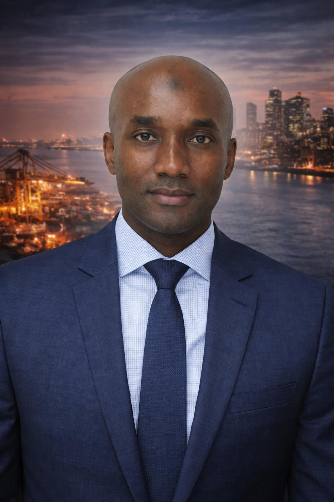

Additional Roles
Founder & Chairman of Artemis Group, Founder & Chairman of AgriBiz SAS, and Board Member at Keystones Partners Ltd.

Strategic Leadership and Transaction Execution Across Global Capital Markets and Sub-Saharan Africa.

Founder & Chief Executive Officer
Latyr Diop is the Founder and Chief Executive Officer of Arthemis Capital Ltd. He works at the intersection of global capital and high-growth investment opportunities, advising corporates, financial institutions and investors on capital raising, mergers & acquisitions and strategic transactions across Africa and other growth markets.
Through disciplined structuring, strong partnerships and long-term vision, he leads the firm in connecting international capital with high-impact investment opportunities across emerging markets.
Connect with LeadershipOver the past two decades, Latyr has held senior leadership roles within leading pan-African banking institutions where he led complex financing initiatives and built strong relationships with global investors, development finance institutions and corporate leaders.
Founder & Chairman of Artemis Group, Founder & Chairman of AgriBiz SAS, and Board Member at Keystones Partners Ltd.
Recognised among the Top 100 Investment Bankers worldwide in 2023.
Arthemis Capital was created to connect international capital with high-impact investment opportunities across emerging markets.
Through disciplined structuring, strong partnerships and long-term vision, the firm remains focused on supporting economic transformation and sustainable growth.
Read Founder's Perspective